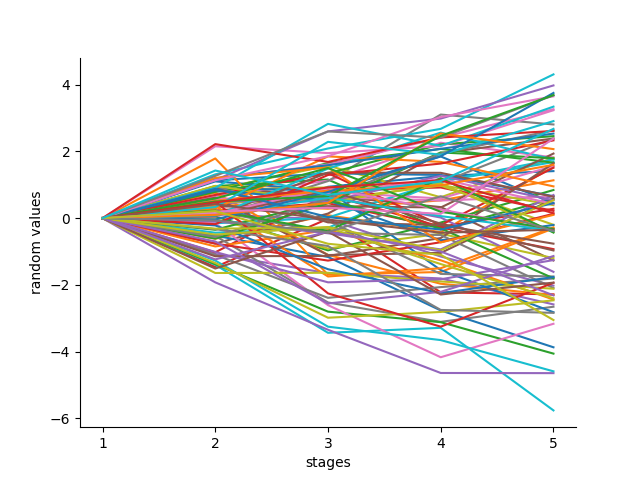
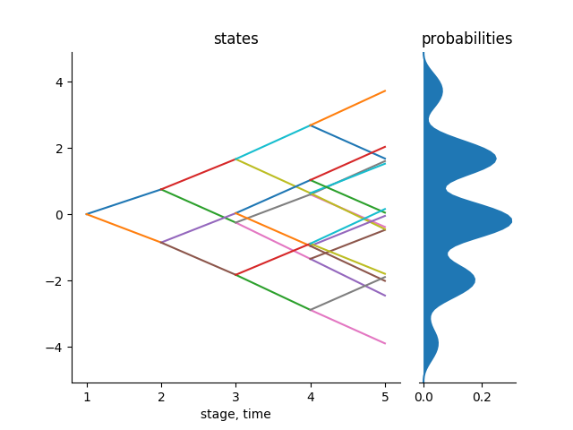

Introduction
A stochastic program is a mathematical program that involves some uncertain data. These parameters may be mostly accurately described by random variables. In most cases, it is difficult to optimize directly in terms of the distributions of these random variables. Hence, in most cases, these distributions are approximated by discrete distributions with a finite number of scenarios for the random variables. This discretization procedure is what is often called scenario generation. Uncertainty in long-term capacity planning is inescapable. The random parameters can be conceived to follow a multistage stochastic process over some time space so that the discrete scenarios represent sample paths. The approach we take is to form an approximation of the original stochastic process by discretization.
In multistage stochastic optimization, we are interested in approximations of stochastic processes by finite structures. These processes are random and they have uncertain scenarios and a decision maker needs to make decisions at different stages of the process. It is useful to depict the possible sequences of data for this processes in form of a scenario tree in the case of a discrete time stochastic process and a scenario lattice for Markovian data processes.
A scenario tree is a set of nodes and branches used in models of decision making under uncertainty. Every node in the tree represents a possible state of the world at a particular point in time and a position where a decision can be made. Each tree node has a single predecessor and multiple successors whereas a lattice can have many predecessor.
A scenario tree/lattice is organized in levels which corresponds to stages $1,\ldots,T$. Each node in a stage has a specified number of predecessors as defined by the branching structure. A node represents a possible state of the stochastic process and the vertices represents the possibility of transition between the two connected nodes. A scenario tree differs from a scenario lattice by the condition that each node in stage $t$ must have one predecessor in stage $t-1$. For a lattice, that is not the case; all the nodes in stage $t-1$ share the same children in stage $t$.
Goal of ScenTrees.jl
We model stochastic processes by scenario trees and scenario lattices. The distributions of these processes may be continuous and involves parameters that are uncertain.
The goal of ScenTrees.jl is to approximate the distributions of these stochastic processes by discrete distributions with finite number of scenarios of the random variables. We generate a valuated probability scenario tree or a scenario lattice which represents the stochastic process in the best way possible using the stochastic approximation algorithm. These processes are random and represent uncertainty at a particular state and at a certain point in time.
These approximations should be tractable, which is small enough to allow for reasonable calculation times, but is large enough to capture the important features of the problem. We use the concept of multistage distance to determine the quality of the approximations
Introductory example
Consider a simple Gaussian random walk in 5 stages. The starting value of this process is known and fixed, say at $0$ and the other values are random. The following plot shows 100 sample paths of this process:

We generate and improve a scenario tree or a scenario lattice using this stochastic process. The number of iterations for the algorithm equals the number of sample paths that we want to generate from the stochastic process. Also, the number of stages in the stochastic process equals the number of stages in the scenario tree or the scenario lattice.
The user is free to choose any branching structure for the scenario tree/lattice. The branching structure shows how many branches each node in the tree has at each stage of the tree. For example, we can use a branching structure of $1x2x2x2x2$ for the scenario tree. This means that each node in the tree has two children. Basically, this is a binary tree. It has been shown that the elements in the branching structure have a direct relationship with the quality of the resulting scenario tree/lattice. A scenario tree/lattice with many branches has a better approximation quality than a scenario tree with less branches.
Using the binary branching structure stated above, we obtain the following valuated probability tree that represents the above stochastic process:

Figure 1: Scenario Tree 1x2x2x2x2
The above tree is optimal and therefore can be used by a decision maker for a decision making process depending on the type of problem he/she is handling. To measure the quality of this approximation, we use the concept of multistage distance between the stochastic process and the scenario tree or lattice, which we introduce in the following subsection.
Multistage distance
To measure the distance of stochastic processes, it is not sufficient to only consider the distance between their laws. It is also important to consider the information accumulated over time i.e., what the filtration has to tell us over time. The Wasserstein distance do not correctly separate stochastic processes having different filtration. It ignores filtration and hence does not distinguish stochastic processes. Multistage distance comes in handy in the situations for measuring distances for stochastic processes. Multistage distance is also called the process distance or nested distance.
Multistage distance was introduced by Georg Ch. Pflug (2009). It turns out that this distance is very important to measure the distance between multistage stochastic processes as it incorporates filtration introduced by the processes. We use this distance in our algorithm to measure the quality of approximation of the scenario tree and scenario lattice. Generally, a scenario tree/lattice with a minimal distance to the stochastic process is consider to have a better quality approximation.
The distance between the above scenario tree and the original process is 0.0894. This shows that the scenario tree above approximates the stochastic process well. This tree can therefore be used for decision making under uncertainty.
Description of a scenario tree
A scenario tree is described by the following:
- Name of the tree
- Parents of the nodes in the tree
- Children of the parents in the tree
- States of the nodes in the tree
- Probabilities of transition from one node to another.
A scenario tree is a mutable struct of type Tree(). To create a non-optimal scenario tree, we need to fix the branching structure and the dimension of the states of nodes you are working on. The type Tree() has different methods:
julia> using Pkg
julia> Pkg.add("ScenTrees")
julia> using ScenTrees
julia> methods(Tree)
# 4 methods for generic function "(::Type)":
[1] Tree(name::String, parent::Array{Int64,1},
children::Array{Array{Int64,1},1}, state::Array{Float64,2}, probability::Array{Float64,2})
[2] Tree(identifier::Int64)
[3] Tree(spec::Array{Int64,1})
[4] Tree(spec::Array{Int64,1}, dimension)All the methods correspond to the way you can create a scenario tree. For the first method, the length of states must be equal to the length of the probabilities. In the 2nd method, you can call any of our predefined trees by just calling on the identifier (these identifiers are 0, 301, 302, 303, 304, 305, 306, 307, 401, 402, 4022, 404, 405). And finally the most important methods are the 3rd and 4th method. If you know the branching structure of your scenario tree, then you can create an non-optimal starting tree using it. If you don't state the dimension you are working on, then it is defaulted into 1. For example, Tree([1,2,2,2,2]) creates a binary tree with states of dimension one as in Figure 1 above
Description of a scenario lattice
A scenario lattice differs from a scenario tree in that every node in stage t is a child for each node in stage t-1. So the nodes in stage t-1 share the same children.
Due to the above, we only describe a scenario lattice by:
- Name of the lattice
- States of the nodes of the lattice
- Probabilities of transition from one node to another in the lattice
A scenario lattice has only one method.
julia> methods(Lattice)
1 method for generic function "(::Type)":
[1] Lattice(name::String, state::Array{Array{Float64,2},1},
probability::Array{Array{Float64,2},1})This method is not very important because we only need it to produce the results of the lattice approximation process. We will see later that for lattice approximation, we need the branching structure and so the structure of the lattice is not very important as in the case of a scenario tree.
Exported functions
Since we have the basics of the scenario tree and the scenario lattice and since we created ScenTrees.jl with an intention of being user-friendly, we present the exported functions that are visible to the user i.e., that are public, and the user can call these functions depending on what he/she wants to achieve with this package:
- Tree (associated are: nodes, stage, height, leaves, root, parttree, buildprobabilities!),
- tree_approximation!
- Lattice,
- lattice_approximation,
- kernel_scenarios (for conditional density estimation method)
- Plotting utilities (these functions include: treeplot, plothd and plot_lattice),
- Examples of process functions (gaussianpath1D, gaussianpath2D, runningmaximum1D, runningmaximum2D, path) and,
- bushiness_nesdistance (returns a graph showing how different factors affects the multistage distance.)
The most important functions in this module are
tree_approximation!()andlattice_approximation()since these are the two functions which are used to approximate scenario trees and scenario lattices respectively.The other important function is the
Tree(bstructure, dimension)function which gives the basic starting structure of a scenario tree.
Querying the documentation of each function
All of the above functions have been documented in their respective scripts and the user can find out what each function does by putting a ? before the function. For example, ?leaves will give an explanation of what the function leaves does.
In the upcoming tutorials, we will have a look in detail on what each function of this package does.